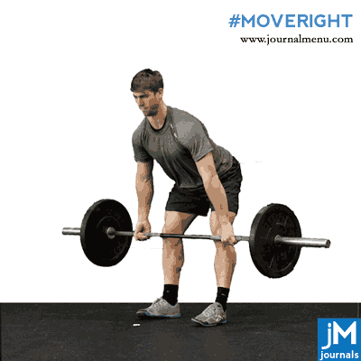
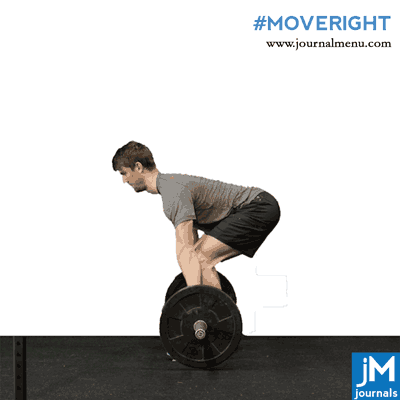

In the days of Strongmen of yore, the exercise was actually referred to as 'Dead weight lift' which got shortened to deadlift.
Thus the weight is dead or immovable on the floor and the lifter hinges from the hips, lifting the weight to waist height in a single move.
A weight training exercise where one lifts a loaded barbell off the ground from a stabilized bent-over position.


The top 8 benefits of deadlifts
1. Activate your hip extensors
Deadlifts are among the best exercises for training your hip extensors. Your hip extensors include the gluteus maximus and hamstring complex,
which are commonly targeted muscles in fitness programs due to their functional use and aesthetic appeal when properly trained.
2. Reduce lower back pain
Lower back pain is an incredibly common complaint among the general population.
While there are many causes of lower back pain that require differing treatments, research suggests that for mild mechanical low back pain, deadlifts can be an effective tool for reducing or reversing this ailment (3).
Note that proper deadlift technique with a braced, neutral spine is crucial for ensuring deadlifts do not aggravate your pain.
You should consult a healthcare professional before attempting deadlifts as part of a treatment for lower back pain.
3. Improve jump performance
Jumping is a key skill for a variety of athletic and recreational activities, and your jumping ability often reflects the overall development of your lower body power.
Plus, the increased power reflected in the ability to jump transfers to other maximal power activities like sprinting.
4. Improve bone mineral density
Loss of bone mineral density is a common effect of aging and a major health issue facing older adults. Advanced loss of bone mineral density results in osteoporosis, which greatly increases the risk of fractures among older adults. Fractures can lead to a cascade of ongoing physical health problems related to loss of mobility.
Fortunately, a large body of research supports the use of resistance training to slow or even reverse age-related loss of bone mineral density. This includes the use of exercises such as the deadlift (5Trusted Source).
The key to increased bone mineral density is performing weight-bearing exercises that load the whole body with external resistance.
5. Activate your core
Training your trunk muscles and core is a key aspect of well-rounded fitness programs. While many different exercises train your core, research has suggested that deadlifts and other free-weight exercises are an effective way to activate and strengthen the muscles that stabilize your spine,
such as the external oblique, rectus abdominis, and erector spinae
6. Boost your metabolism
Weight loss is a common goal of many fitness programs. Successfully losing weight, particularly via losing body fat, requires you to burn more calories than you consume in a given period of time.
Traditional weight loss programs combine dietary modifications to reduce calorie intake and physical activity to increase calorie burning.
When it comes to effectively increasing your metabolism through movement, studies suggest that resistance training with exercises like the deadlift may be among the most efficient methods to increase calorie burn,
all with less overall time spent training in the gym.
7. Carry less risk during failed repetitions
The previously mentioned benefits are based on scientific research. Yet, there are some subjective benefits of deadlifts that make them an effective exercise in practice.
For example, deadlifts allow you to lift large amounts of weight without positioning the weight on top of you. In the event of a failed repetition, you can usually safely drop the weight without risking major injury.
Exercises like the barbell back squat or bench press are also effective training methods. However, you generally cannot risk going as heavy without a spotter given that a failed repetition can literally crush you.
If you typically work out alone, deadlifts are a good way to safely add heavier training to your workouts.
8. Offer simplicity of equipment
The final subjective benefit of deadlifts is the relative simplicity of the equipment. All you need is a barbell and some plates, or a weighted object with a handle, such as a kettlebell, to perform the movement.
Unlike other exercises that require specific equipment or access to a power rack, deadlifts are a very minimalist exercise for the extensive benefits they provide.
DEADLIFT PRECAUTIONS AND CONTRADICTIONS
Deadlifts and their variations are extremely safe when performed by healthy individuals with proper technique. The biggest danger occurs if you fail to maintain a neutral spine and instead round your back as you pull the weight, particularly if your spine actively moves while bearing the weight.
This places extreme pressure on the discs in your spine and can lead to acute and chronic injuries.
Often, attempting to lift more weight than you’re ready for leads to a compromised spinal position. Movement in the spine during deadlifts can also be due to a lack of knowledge about proper technique.
Taking a big breath to engage your core and abs before pulling the weight will stabilize your spine under the load and can help prevent the rounding issue.
If you have a spine or disc injury or history of chronic back pain, you should seek professional guidance from a physical therapist or other licensed expert before attempting deadlifts.